← 返回阅读库 · 原论文目录
论文讲解阅读文档 · 机器人学 · v134
Latent Action Pretraining from Videos[2410.11758]
视频时长 00:06:40；讲解文字 2,811 字符；提取讲解画面 37 张。按视频原顺序阅读，每段文字保留时间戳。
文字来自整段视频的自动语音转写，按自然停顿分段，并与 PPT / 论文页面 / 演示画面对齐。未将讲解压缩为摘要；术语、数字和口述公式请结合画面及原论文核对。 阅读稿已校正规范部分明确术语误识别；原始逐字稿和每处修改记录另行保留。
讲解画面为源视频截图（640×360），不是可编辑 PPT 文件。全片按每秒 2 帧扫描内容变化，逐步展开页保留；连续动画保留代表画面。清晰度受源视频限制。
下载完整资料包 · 含离线 HTML、PDF、Word、全部 PPT 画面和字幕。
原论文与材料
Latent Action Pretraining from Videos · 下载完整 PDF（27 页）
按时间阅读
00:00:00–00:00:28 · 画面 001
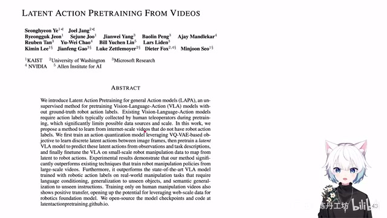
00:00:00–00:00:28 · 画面 001大家好，今天我们来快速说一篇论文，Latent Action Pre-training from Videos。这篇论文，你一看标题，又是一个希望从一些互联网上广泛存在的这种视频里面学一个好的 Robo ActionRobo Policy 这样的一个工作。类似的工作每年几乎都会有这么一些，但是用来用去的技术其实并没有什么特别新的地方。这篇我觉得也不是特别的意外。那么下面我们直接来看。
00:00:28–00:00:40 · 画面 002
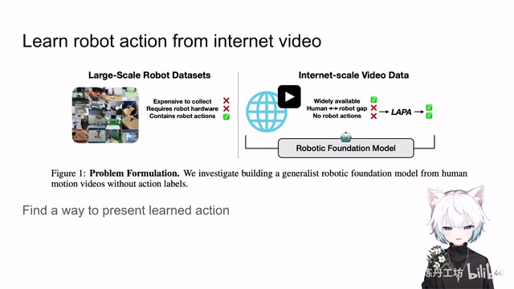
00:00:28–00:00:40 · 画面 002那才是这篇的思路呢？就是对吧，我收大量的机器人的数据，机器人的 demo 需要遥控实在是太麻烦了。能不能去现在互联网上直接拿现成的这些人类的视频来去做呢？那你拿当然是可以拿的，但是问题就是第一，第一当然是人类和机器人当然还是可悲的后避障对吧，一体立场又加重了。那么第二点呢，就是你网上只能看到一个视频。
00:00:40–00:00:42 · 画面 003
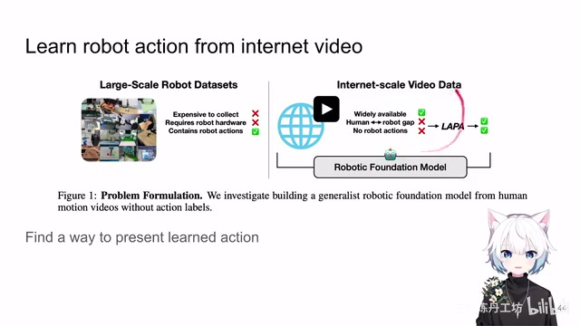
00:00:40–00:00:42 · 画面 00300:00:42–00:01:36 · 画面 004
00:00:42–00:01:36 · 画面 004视频里面是不包含各种控制指令的，就是你不知道这个人做了什么操作才能导致视频中的画面。这样子对我们机器人的学习不能说一点帮助没有，只能说是毫无帮助。针对这样的问题，之前你像 OpenAI 有它的 VPT，它就是学一个 classifier 去把这个 action 给它解出来，因为它是做 Minecraft 的。然后用 bootstrapping 的方法把整个数据都标一遍。这里做的更抽象一点，或者说是更 generalize 一点，所以它不会去用人工去指定说这个东西该去做哪个 action。你实际把它真正所有的视频都标出相应的 action，这其实是不太现实的事情。
00:01:36–00:01:46 · 画面 005
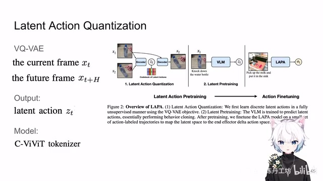
00:01:36–00:01:46 · 画面 005那么本文用了自监督学习的方法，用了一个叫做 Latent Action Quantization，本质上就是一个 VQ-VAE。它这里的操作就是，我有当前的一个视频的一个图像一帧，然后我有未来 H 时刻之后的某一帧。因为你两个时刻它不能紧挨着，紧挨着可能它俩时刻区别不大对吧。
00:01:46–00:01:47 · 画面 006
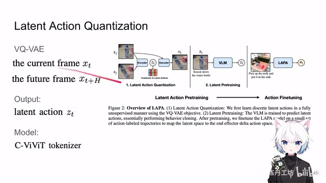
00:01:46–00:01:47 · 画面 00600:01:47–00:01:59 · 画面 007
00:01:47–00:01:59 · 画面 007因为这两个数值之后，它把它作为输入，我希望我这个模型通过自监督的方法能够告诉我这两个之间它们发生了什么样的 action 对吧。这个 action 它也不一定是真正的可以做到机器人操作的 action，它就管它叫 latent action，你给我告诉一个大概，你至少说能给我聚个类对吧，所有相似的 action 都长得差不多就可以了。那么然后就把它们套到 VQVAE 的框架里面。
00:01:59–00:02:00 · 画面 008
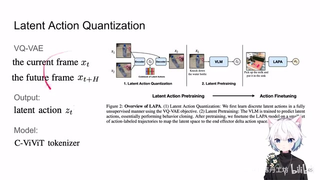
00:01:59–00:02:00 · 画面 00800:02:00–00:02:51 · 画面 009
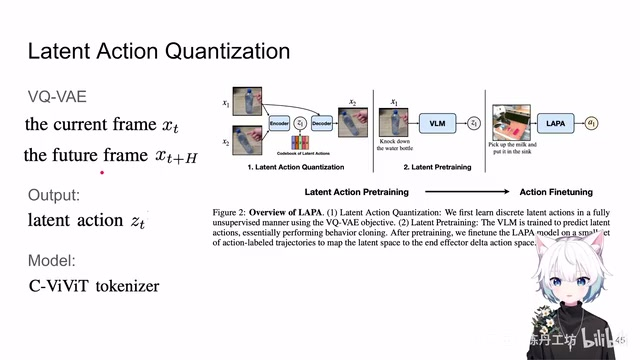
00:02:00–00:02:51 · 画面 009你的输入是一个 C-ViViT 这样的一个 encoder，把两帧图像解进来，然后提一个 representation，提一个离散的表达，然后再做到 decoder 里面。这里 decoder 它是拿到了第一帧的信息，你的 action 的 latent 它希望解除第二帧的图像来，很直接的一个设计对吧，就是你常见的 future prediction 这样的一个设计，就让这样一个简单的 loss 结束了。
00:02:51–00:02:52 · 画面 010
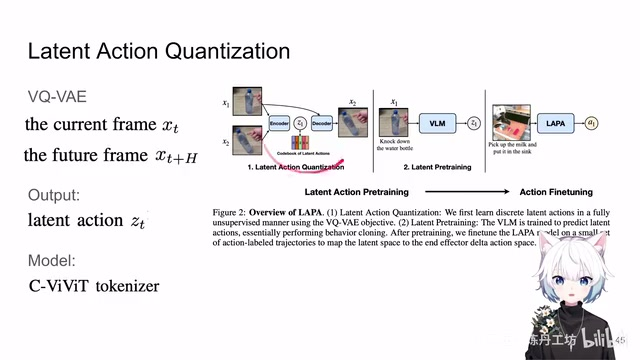
00:02:51–00:02:52 · 画面 01000:02:52–00:03:09 · 画面 011
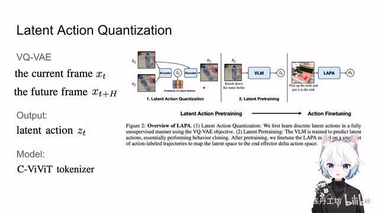
00:02:52–00:03:09 · 画面 011那么这个就是第一个步骤。把所有的视频呢通过这样的方式让我们学一个好的码表。你一个图像的对进来之后。过 encoder你就能够给它提出一个 latent action 来。这是第一步那然后之后呢你就可以用这样标记好的这个数据。
00:03:09–00:03:10 · 画面 012
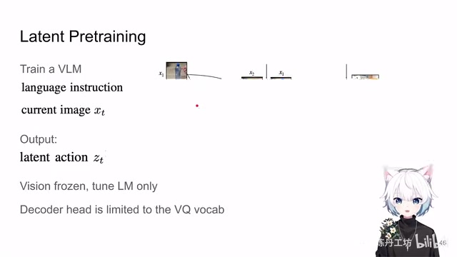
00:03:09–00:03:10 · 画面 01200:03:10–00:03:39 · 画面 013
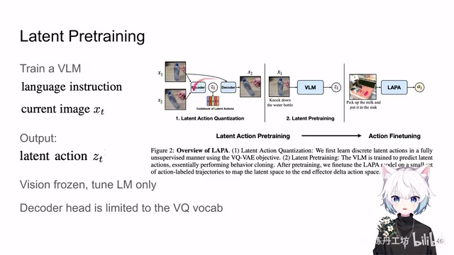
00:03:10–00:03:39 · 画面 013你把所有的视频有的视频都在这里面过一遍。这样子你能每个视频都可以给你提出。这样一个 latent action那然后呢第二步呢就是我想要做这个 latent pre-training。我拿了这个 latent action我希望我真正的去 train 一个这个 policy。让这个 policy 呢能够掌握这其中的因果。
就是说我拿到当前的一张图像。我告诉它我想要干什么。这是一个文本的形式嘛。然后呢
00:03:39–00:03:42 · 画面 014
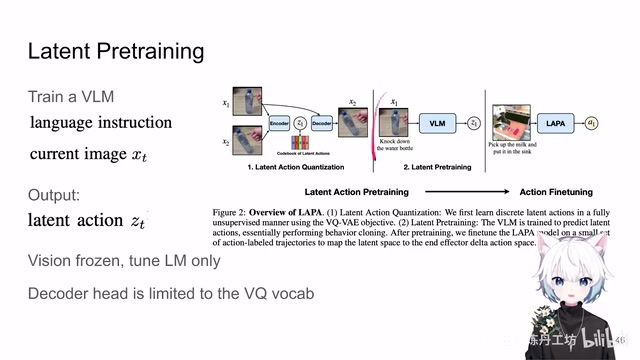
00:03:39–00:03:42 · 画面 014把它送到 Vision Language Model 里面我希望这个 Vision Language Model 呢
00:03:42–00:03:48 · 画面 015
00:03:42–00:03:48 · 画面 015给我生成这样的这个 latent action。那这个是它的第二个阶段。那在这个阶段里面呢。
00:03:48–00:03:49 · 画面 016
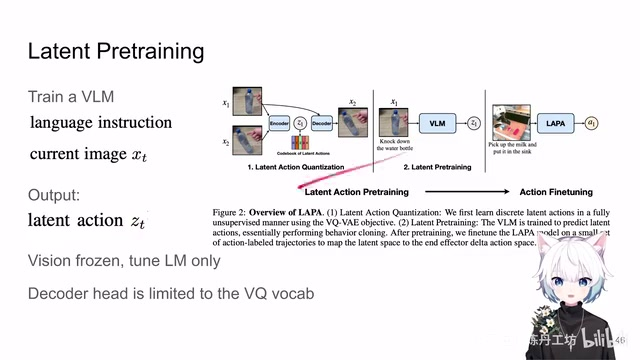
00:03:48–00:03:49 · 画面 016它既然是你希望生成 latent action。
00:03:49–00:04:06 · 画面 017
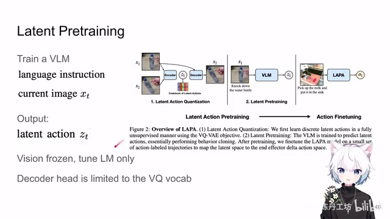
00:03:49–00:04:06 · 画面 017所以你最后的 language那个 head它也不是普通的词表了。你就直接把它变成一个单层的全连接层。它的输出呢就是你前面的 VQ 的它的词表。然后呢你就去按照 LLaVA 的方法。把视觉的部分冻住。
00:04:06–00:04:09 · 画面 018
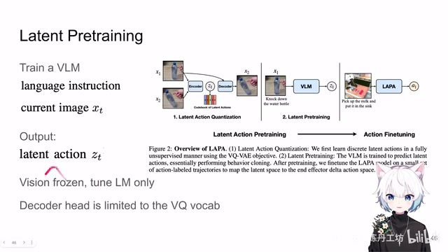
00:04:06–00:04:09 · 画面 018你就只去调 language model
00:04:09–00:04:17 · 画面 019
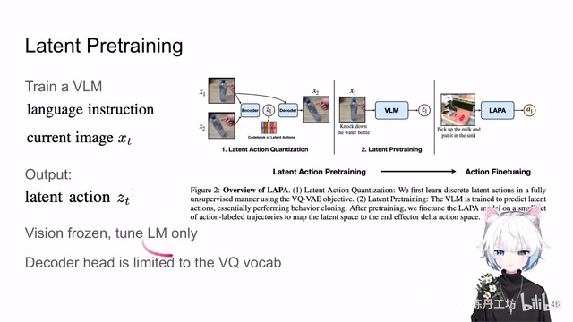
00:04:09–00:04:17 · 画面 019还有后面的全连接层这样的部分。做这样的一个 pre-training去尝试去拟合到这些假的 label 上。但实际上这些 label 呢
00:04:17–00:04:22 · 画面 020
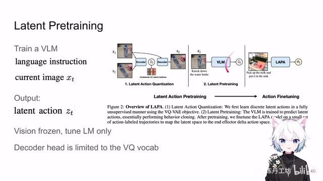
00:04:17–00:04:22 · 画面 020你并不能够直接拿来做控制。这意味着你过完这个阶段之后呢
00:04:22–00:04:24 · 画面 021
00:04:22–00:04:24 · 画面 021你还要把这个 language model
00:04:24–00:04:25 · 画面 022
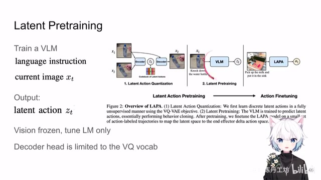
00:04:24–00:04:25 · 画面 022真正 tune 到可以去做 action 的这样一个程度
00:04:25–00:04:29 · 画面 023
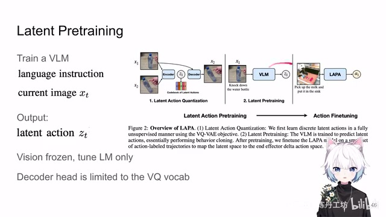
00:04:25–00:04:29 · 画面 023那这个呢就是第三步
00:04:29–00:05:04 · 画面 024
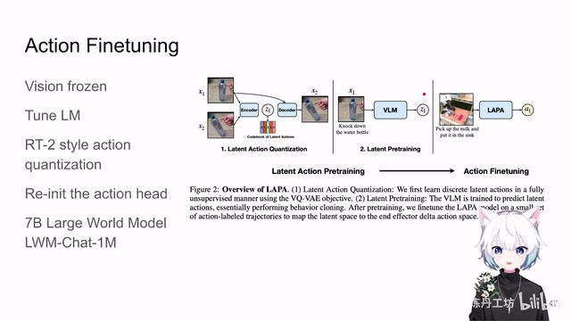
00:04:29–00:05:04 · 画面 024actionfine-tune那在这一步呢你把预测这个 latent action 的这个东西给它去掉换成真正的机器人的数据真正有 action label 的东西然后呢这个最后的头给它换成这个预测 action 的这样一个头然后呢你就做 fine-tune 就好了嘛，但是你前面的这个 language model pretrain 的这些东西都保留。那这样下来你就希望你的模型在前面 pretrain 的时候啊，学到了这么一些大概的知识，只要在这样稍加有这个机器人数据 fine-tune 的情况下啊，它就能够取得一个好的操纵效果。这里的 action 的表达还是跟 rt2openvla 一样的，都是离散的 tokenization 啊，然后呢你还是这个 mlp，你的这个最后的全连接层换成一个跟你的这个词典
00:05:04–00:05:05 · 画面 025
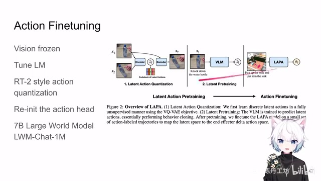
00:05:04–00:05:05 · 画面 02500:05:05–00:05:24 · 画面 026
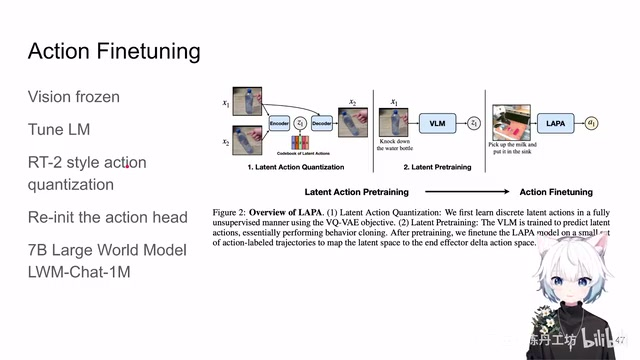
00:05:05–00:05:24 · 画面 026数量大小一样的这个 tad 就可以了啊然后呢你各种 fine-tune 对吧就是标准的一个 vqa 式的这样一个 fine-tune这个就结束了以上就是本文最核心的东西你想到之前有 MVP 这样的工作对吧不过就是拿 Masked Autoencoder 去退一下你的 Vision Encoder 然后做完这一通现在你有这样的工作对吧就是你去学一个 Latent Action 然后去 fine-tune 一下你的 Vision Language Model 最后再去拿真实的数据去退一样的对吧
00:05:24–00:05:26 · 画面 027
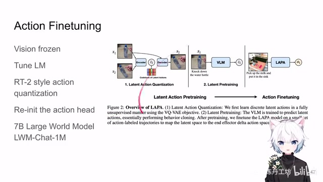
00:05:24–00:05:26 · 画面 02700:05:26–00:05:39 · 画面 028
00:05:26–00:05:39 · 画面 02800:05:39–00:05:41 · 画面 029
00:05:39–00:05:41 · 画面 02900:05:41–00:05:45 · 画面 030
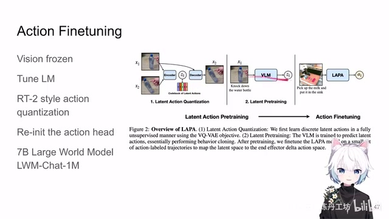
00:05:41–00:05:45 · 画面 03000:05:45–00:05:48 · 画面 031
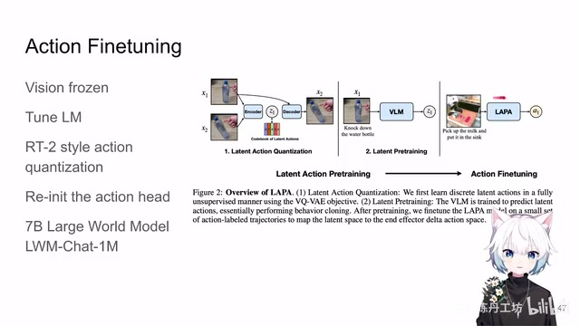
00:05:45–00:05:48 · 画面 03100:05:48–00:05:59 · 画面 032
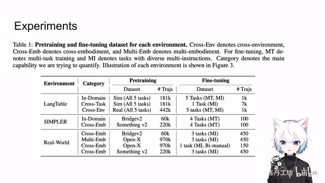
00:05:48–00:05:59 · 画面 032下面作者汇报了一些实验结果对吧看一看他们用了哪些 Python 的数据 fine-tune 的数据 LanguageTableSimpler 还有 Bridge、Open-X 这些东西都是很常见的数据集了我们直接看他的结果对吧肯定是比之前的各种好具体到文章中各种实际的实验的配置感兴趣的朋友非常推荐你到原文查看
00:05:59–00:06:00 · 画面 033
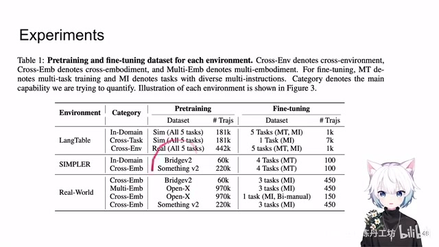
00:05:59–00:06:00 · 画面 03300:06:00–00:06:02 · 画面 034
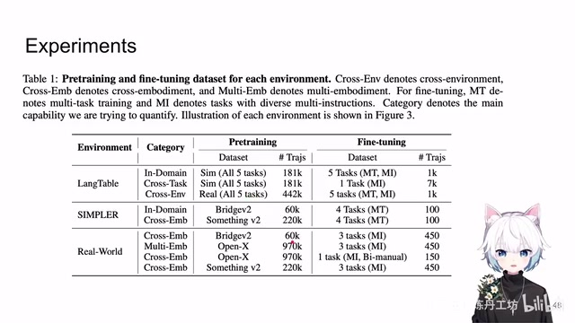
00:06:00–00:06:02 · 画面 03400:06:02–00:06:17 · 画面 035
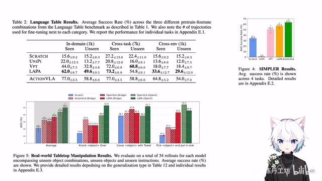
00:06:02–00:06:17 · 画面 035好的那么以上就是我对这篇文章的一个非常快速的整理啊还是那句话对这种类型的文章出现毫无意外每年都可以顺着这样的主题去做一些工作对吧但到头下来感觉还是工程的成分多一点但是呢之后能实际用的产品呢确实没见到那这个是我们之前说到的 VPT 不过你说相对于之前的这个 VPT 它肯定还是进步一点好的那么以上就是我对这篇文章一个非常快速的整理啊那么感谢您的收看请多多指点
00:06:17–00:06:40 · 画面 036
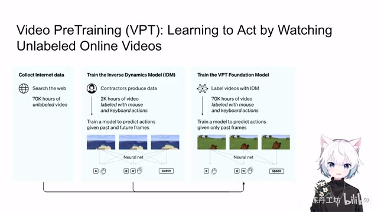
00:06:17–00:06:40 · 画面 03600:06:40–00:06:40 · 画面 037
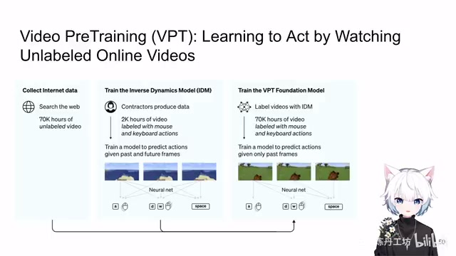
00:06:40–00:06:40 · 画面 037转写与来源说明 · 1 个自动复核提示
保留 71 个原始语音片段，1 个片段触发自动复核提示。提示仅用于定位可能的术语、重复或识别问题，不等于已确认错误。
讲解画面为源视频截图（640×360），不是可编辑 PPT 文件。全片按每秒 2 帧扫描内容变化，逐步展开页保留；连续动画保留代表画面。清晰度受源视频限制。
原视频：paper/合集_2026-10-16_机器人学/[论文速览]Latent Action Pretraining from Videos[2410.11758].mp4
SHA-256：7d8fca2032842d966e460e5c1f2c154e10da24aa2dd8ec3288f93e164ebbe562
把它送到 Vision Language Model 里面
全文按视频语音与画面制作。原论文可从上方链接下载；完整资料包保留全文、原始逐字稿、字幕和校对记录。